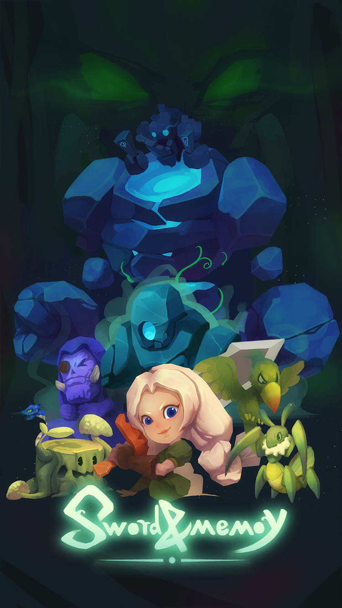

经验分享
第三轮demo比赛总结
这轮题目自拟，然后我们定了一个冒险+动作的游戏，参考了彩虹岛W 、冒险岛M 、星之骑士等动作冒险手游。这轮时间大概有13天半（去掉第一天的定方向，其实也不是很多，自拟的题目还是难抉择啊。），然后我们就想做一个比较大一点的游戏，策划也想的非常大，冒险+动作都要。既要设计关卡 ，又要设计人物动作。
由于这次主要逻辑不是我写的，所以我也不能说的很详细，整体框架是，人物动作由3DMax 完成，并且绑好骨骼做好动作。然后直接丢Unity里使用，但是场景是2D的，就人物是3D的，所以调整了很久。人物大概用了24个动作，然后Unity用状态机来管理，写了一个接口供逻辑调用。逻辑里面写了人物数值属性、输入控制、攻击受击死亡等状态；怪物属性、状态、AI行为树（用了Behavior插件）；还有BOSS专门写了AI。这次我负责的是2D怪物的动画，我用的2Danima插件绑的2D骨骼然后录制动画，总共2只Boss和6只小怪。Boss有8套动作、每种小怪有5套动作。
转折点：中间有导师探班的时候，说我们的游戏应该最好偏向于某一方面：动作 OR 冒险 。最后我们选择了动作（偏复杂一点的路，虽然最后也没有成功）。既然选择了动作，我们就要把很多关卡设计方面的东西都砍掉，专注打击感的提升，我们为此做了：刀光、爆点、屏幕抖动、击退和挑飞等控制效果、还有一些蓄力快斩之类的节奏感技能。到了Deadline的前一天，我们整合出现了问题，导致提交作品的时候，没能交上一个比较完善的作品，UI部分还有一堆BUG，不然我有信心一定能拿第一。（算是一点遗憾把，没能把自己最好的一面展现出来）
比赛过程中，我在前五天，研究unity的一个联网引擎——PhotonServer，想要吃透它，结果也是学了个半吊子把，最后也没用上联网模式，由于当初定的是单人模式逻辑写的都死死的，后期想要转联网，还需要重构代码，比较耗时间。于是就干脆把联网部分砍掉。（这次我用的联网部分跟2D动画，以后若是有时间，再写专门的一篇文章介绍。）
总结： 唉，失败也是难免的。整理整理失败的原因，还是可以学到挺多东西的。感觉这轮比赛程序可能要背很大程度的锅，美术在最后三天前结束了他们的任务，而且我们程序还是没能完成任务，说明还是有很大的问题的。我来复盘一下程序这边13天做了啥把。前五天，我做了一个小型的联机Demo，未接入。其他部分做了单人模式的主逻辑、UI未开工、基本程序团队处于养老划水状态、很闲。第六天开始，我做一些2D动画方面的东西，并且继续研究联机，3D角色建模完成，导入Unity开始调整动作。第七、八天，继续调角色动作、并且整合美术关卡资源做成预制体，交由策划进行关卡摆放。第九、十天，各种特效的选取调整、策划摆完关卡不满意美术摆。第十一天开始做UI，开始了连续三天的通宵做UI，但是没想到UI是这么复杂，导致最后一天才做完UI准备接入，忘了说我联网在第十天开始就砍掉，准备帮助一起做主逻辑部分。最后接入的时候出了很多问题，Unity2018也经常卡死崩溃_ (:з)∠) _。如果UI能早点开始做，我们也不会落到这种地步。
总的来说 ，还是没有规划好，每天的任务清单，全凭感觉，但偏偏这轮感觉出了差错，本以为打包一次就几分钟，然后Unity打包一次大概30分钟，这次浪费了很多时间。
除此之外 ，我想说一句：一个项目的成功与否，在立项初期就已经决定好了。策划在这一步起关键性作用，一个好策划，提出了一个好想法，那这个项目已经成功了一半了，后面就看程序怎么实现它、美术如何打扮它。而且一个好策划最好能说出这个项目的卖点，并且能讲的非常详细不是很笼统，我相信很多人都会愿意配合，不然就说一句我们来做一个动作类游戏吧。这。。。怎么讲，动作类游戏，谁TM知道你想要做啥啊，跟没讲一样，而且这么一说士气就弱了三分，60分及格，顶多就一半30分了。开头很重要。这决定了这个项目能达到的最高高度。其次才是程序美术如何让它达到这个高度。
最后放一张这轮游戏的海报：
